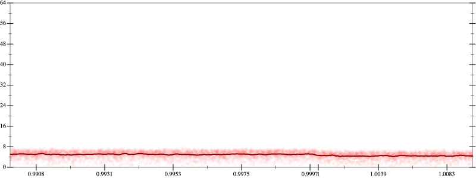
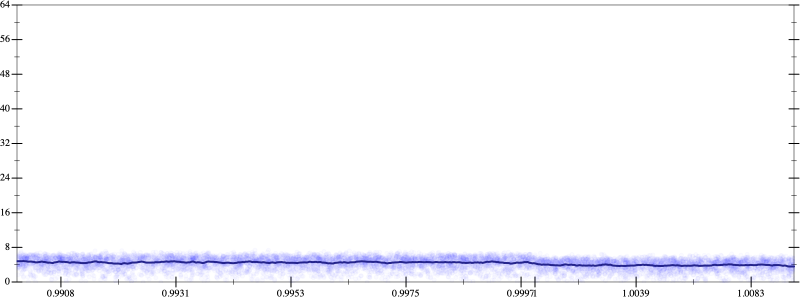
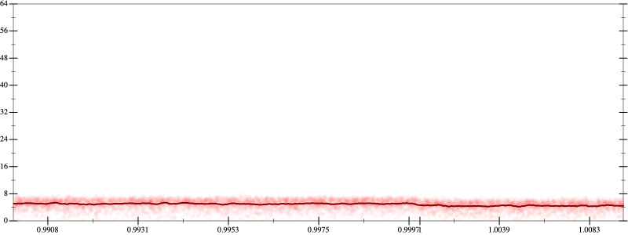
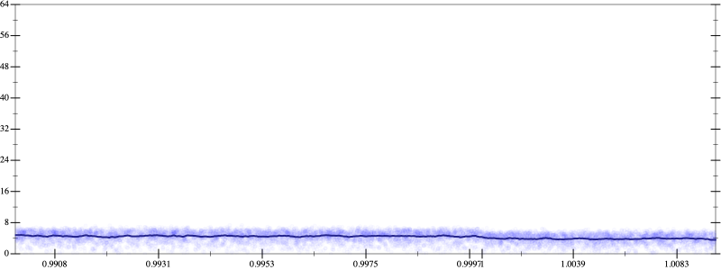

Initial program 4.9
\[\left(\left(\left(0.273438 + -9.84375 \cdot \left(x \cdot x\right)\right) + 54.140625 \cdot \left(\left(\left(x \cdot x\right) \cdot x\right) \cdot x\right)\right) + -93.84375 \cdot \left(\left(\left(\left(\left(x \cdot x\right) \cdot x\right) \cdot x\right) \cdot x\right) \cdot x\right)\right) + 50.273438 \cdot \left(\left(\left(\left(\left(\left(\left(x \cdot x\right) \cdot x\right) \cdot x\right) \cdot x\right) \cdot x\right) \cdot x\right) \cdot x\right)\]
Applied simplify4.6
\[\leadsto \color{blue}{\left(\left(\left(x \cdot 54.140625\right) \cdot {x}^{3} + x \cdot \left(x \cdot -9.84375\right)\right) + 0.273438\right) + \left({x}^{3} \cdot {x}^{3}\right) \cdot \left(-93.84375 + \left(50.273438 \cdot x\right) \cdot x\right)}\]
- Using strategy
rm Applied flip3-+4.6
\[\leadsto \color{blue}{\frac{{\left(\left(\left(x \cdot 54.140625\right) \cdot {x}^{3} + x \cdot \left(x \cdot -9.84375\right)\right) + 0.273438\right)}^{3} + {\left(\left({x}^{3} \cdot {x}^{3}\right) \cdot \left(-93.84375 + \left(50.273438 \cdot x\right) \cdot x\right)\right)}^{3}}{\left(\left(\left(x \cdot 54.140625\right) \cdot {x}^{3} + x \cdot \left(x \cdot -9.84375\right)\right) + 0.273438\right) \cdot \left(\left(\left(x \cdot 54.140625\right) \cdot {x}^{3} + x \cdot \left(x \cdot -9.84375\right)\right) + 0.273438\right) + \left(\left(\left({x}^{3} \cdot {x}^{3}\right) \cdot \left(-93.84375 + \left(50.273438 \cdot x\right) \cdot x\right)\right) \cdot \left(\left({x}^{3} \cdot {x}^{3}\right) \cdot \left(-93.84375 + \left(50.273438 \cdot x\right) \cdot x\right)\right) - \left(\left(\left(x \cdot 54.140625\right) \cdot {x}^{3} + x \cdot \left(x \cdot -9.84375\right)\right) + 0.273438\right) \cdot \left(\left({x}^{3} \cdot {x}^{3}\right) \cdot \left(-93.84375 + \left(50.273438 \cdot x\right) \cdot x\right)\right)\right)}}\]
Applied simplify4.6
\[\leadsto \frac{{\left(\left(\left(x \cdot 54.140625\right) \cdot {x}^{3} + x \cdot \left(x \cdot -9.84375\right)\right) + 0.273438\right)}^{3} + {\left(\left({x}^{3} \cdot {x}^{3}\right) \cdot \left(-93.84375 + \left(50.273438 \cdot x\right) \cdot x\right)\right)}^{3}}{\color{blue}{\left(\left({x}^{3} \cdot {x}^{3}\right) \cdot \left(-93.84375 + \left(x \cdot x\right) \cdot 50.273438\right)\right) \cdot \left(\left({x}^{3} \cdot {x}^{3}\right) \cdot \left(-93.84375 + \left(x \cdot x\right) \cdot 50.273438\right)\right) - \left(\left({x}^{3} \cdot \left(x \cdot 54.140625\right) + 0.273438\right) + \left(x \cdot -9.84375\right) \cdot x\right) \cdot \left(\left({x}^{3} \cdot {x}^{3}\right) \cdot \left(-93.84375 + \left(x \cdot x\right) \cdot 50.273438\right) - \left(\left({x}^{3} \cdot \left(x \cdot 54.140625\right) + 0.273438\right) + \left(x \cdot -9.84375\right) \cdot x\right)\right)}}\]
- Using strategy
rm Applied add-cbrt-cube4.6
\[\leadsto \frac{{\left(\left(\left(x \cdot 54.140625\right) \cdot {x}^{3} + x \cdot \left(x \cdot -9.84375\right)\right) + 0.273438\right)}^{3} + {\left(\left({x}^{3} \cdot {x}^{3}\right) \cdot \color{blue}{\sqrt[3]{\left(\left(-93.84375 + \left(50.273438 \cdot x\right) \cdot x\right) \cdot \left(-93.84375 + \left(50.273438 \cdot x\right) \cdot x\right)\right) \cdot \left(-93.84375 + \left(50.273438 \cdot x\right) \cdot x\right)}}\right)}^{3}}{\left(\left({x}^{3} \cdot {x}^{3}\right) \cdot \left(-93.84375 + \left(x \cdot x\right) \cdot 50.273438\right)\right) \cdot \left(\left({x}^{3} \cdot {x}^{3}\right) \cdot \left(-93.84375 + \left(x \cdot x\right) \cdot 50.273438\right)\right) - \left(\left({x}^{3} \cdot \left(x \cdot 54.140625\right) + 0.273438\right) + \left(x \cdot -9.84375\right) \cdot x\right) \cdot \left(\left({x}^{3} \cdot {x}^{3}\right) \cdot \left(-93.84375 + \left(x \cdot x\right) \cdot 50.273438\right) - \left(\left({x}^{3} \cdot \left(x \cdot 54.140625\right) + 0.273438\right) + \left(x \cdot -9.84375\right) \cdot x\right)\right)}\]
Applied add-cbrt-cube4.6
\[\leadsto \frac{{\left(\left(\left(x \cdot 54.140625\right) \cdot {x}^{3} + x \cdot \left(x \cdot -9.84375\right)\right) + 0.273438\right)}^{3} + {\left(\left({x}^{3} \cdot \color{blue}{\sqrt[3]{\left({x}^{3} \cdot {x}^{3}\right) \cdot {x}^{3}}}\right) \cdot \sqrt[3]{\left(\left(-93.84375 + \left(50.273438 \cdot x\right) \cdot x\right) \cdot \left(-93.84375 + \left(50.273438 \cdot x\right) \cdot x\right)\right) \cdot \left(-93.84375 + \left(50.273438 \cdot x\right) \cdot x\right)}\right)}^{3}}{\left(\left({x}^{3} \cdot {x}^{3}\right) \cdot \left(-93.84375 + \left(x \cdot x\right) \cdot 50.273438\right)\right) \cdot \left(\left({x}^{3} \cdot {x}^{3}\right) \cdot \left(-93.84375 + \left(x \cdot x\right) \cdot 50.273438\right)\right) - \left(\left({x}^{3} \cdot \left(x \cdot 54.140625\right) + 0.273438\right) + \left(x \cdot -9.84375\right) \cdot x\right) \cdot \left(\left({x}^{3} \cdot {x}^{3}\right) \cdot \left(-93.84375 + \left(x \cdot x\right) \cdot 50.273438\right) - \left(\left({x}^{3} \cdot \left(x \cdot 54.140625\right) + 0.273438\right) + \left(x \cdot -9.84375\right) \cdot x\right)\right)}\]
Applied add-cbrt-cube4.6
\[\leadsto \frac{{\left(\left(\left(x \cdot 54.140625\right) \cdot {x}^{3} + x \cdot \left(x \cdot -9.84375\right)\right) + 0.273438\right)}^{3} + {\left(\left(\color{blue}{\sqrt[3]{\left({x}^{3} \cdot {x}^{3}\right) \cdot {x}^{3}}} \cdot \sqrt[3]{\left({x}^{3} \cdot {x}^{3}\right) \cdot {x}^{3}}\right) \cdot \sqrt[3]{\left(\left(-93.84375 + \left(50.273438 \cdot x\right) \cdot x\right) \cdot \left(-93.84375 + \left(50.273438 \cdot x\right) \cdot x\right)\right) \cdot \left(-93.84375 + \left(50.273438 \cdot x\right) \cdot x\right)}\right)}^{3}}{\left(\left({x}^{3} \cdot {x}^{3}\right) \cdot \left(-93.84375 + \left(x \cdot x\right) \cdot 50.273438\right)\right) \cdot \left(\left({x}^{3} \cdot {x}^{3}\right) \cdot \left(-93.84375 + \left(x \cdot x\right) \cdot 50.273438\right)\right) - \left(\left({x}^{3} \cdot \left(x \cdot 54.140625\right) + 0.273438\right) + \left(x \cdot -9.84375\right) \cdot x\right) \cdot \left(\left({x}^{3} \cdot {x}^{3}\right) \cdot \left(-93.84375 + \left(x \cdot x\right) \cdot 50.273438\right) - \left(\left({x}^{3} \cdot \left(x \cdot 54.140625\right) + 0.273438\right) + \left(x \cdot -9.84375\right) \cdot x\right)\right)}\]
Applied cbrt-unprod4.6
\[\leadsto \frac{{\left(\left(\left(x \cdot 54.140625\right) \cdot {x}^{3} + x \cdot \left(x \cdot -9.84375\right)\right) + 0.273438\right)}^{3} + {\left(\color{blue}{\sqrt[3]{\left(\left({x}^{3} \cdot {x}^{3}\right) \cdot {x}^{3}\right) \cdot \left(\left({x}^{3} \cdot {x}^{3}\right) \cdot {x}^{3}\right)}} \cdot \sqrt[3]{\left(\left(-93.84375 + \left(50.273438 \cdot x\right) \cdot x\right) \cdot \left(-93.84375 + \left(50.273438 \cdot x\right) \cdot x\right)\right) \cdot \left(-93.84375 + \left(50.273438 \cdot x\right) \cdot x\right)}\right)}^{3}}{\left(\left({x}^{3} \cdot {x}^{3}\right) \cdot \left(-93.84375 + \left(x \cdot x\right) \cdot 50.273438\right)\right) \cdot \left(\left({x}^{3} \cdot {x}^{3}\right) \cdot \left(-93.84375 + \left(x \cdot x\right) \cdot 50.273438\right)\right) - \left(\left({x}^{3} \cdot \left(x \cdot 54.140625\right) + 0.273438\right) + \left(x \cdot -9.84375\right) \cdot x\right) \cdot \left(\left({x}^{3} \cdot {x}^{3}\right) \cdot \left(-93.84375 + \left(x \cdot x\right) \cdot 50.273438\right) - \left(\left({x}^{3} \cdot \left(x \cdot 54.140625\right) + 0.273438\right) + \left(x \cdot -9.84375\right) \cdot x\right)\right)}\]
Applied cbrt-unprod4.6
\[\leadsto \frac{{\left(\left(\left(x \cdot 54.140625\right) \cdot {x}^{3} + x \cdot \left(x \cdot -9.84375\right)\right) + 0.273438\right)}^{3} + {\color{blue}{\left(\sqrt[3]{\left(\left(\left({x}^{3} \cdot {x}^{3}\right) \cdot {x}^{3}\right) \cdot \left(\left({x}^{3} \cdot {x}^{3}\right) \cdot {x}^{3}\right)\right) \cdot \left(\left(\left(-93.84375 + \left(50.273438 \cdot x\right) \cdot x\right) \cdot \left(-93.84375 + \left(50.273438 \cdot x\right) \cdot x\right)\right) \cdot \left(-93.84375 + \left(50.273438 \cdot x\right) \cdot x\right)\right)}\right)}}^{3}}{\left(\left({x}^{3} \cdot {x}^{3}\right) \cdot \left(-93.84375 + \left(x \cdot x\right) \cdot 50.273438\right)\right) \cdot \left(\left({x}^{3} \cdot {x}^{3}\right) \cdot \left(-93.84375 + \left(x \cdot x\right) \cdot 50.273438\right)\right) - \left(\left({x}^{3} \cdot \left(x \cdot 54.140625\right) + 0.273438\right) + \left(x \cdot -9.84375\right) \cdot x\right) \cdot \left(\left({x}^{3} \cdot {x}^{3}\right) \cdot \left(-93.84375 + \left(x \cdot x\right) \cdot 50.273438\right) - \left(\left({x}^{3} \cdot \left(x \cdot 54.140625\right) + 0.273438\right) + \left(x \cdot -9.84375\right) \cdot x\right)\right)}\]
Applied rem-cube-cbrt4.5
\[\leadsto \frac{{\left(\left(\left(x \cdot 54.140625\right) \cdot {x}^{3} + x \cdot \left(x \cdot -9.84375\right)\right) + 0.273438\right)}^{3} + \color{blue}{\left(\left(\left({x}^{3} \cdot {x}^{3}\right) \cdot {x}^{3}\right) \cdot \left(\left({x}^{3} \cdot {x}^{3}\right) \cdot {x}^{3}\right)\right) \cdot \left(\left(\left(-93.84375 + \left(50.273438 \cdot x\right) \cdot x\right) \cdot \left(-93.84375 + \left(50.273438 \cdot x\right) \cdot x\right)\right) \cdot \left(-93.84375 + \left(50.273438 \cdot x\right) \cdot x\right)\right)}}{\left(\left({x}^{3} \cdot {x}^{3}\right) \cdot \left(-93.84375 + \left(x \cdot x\right) \cdot 50.273438\right)\right) \cdot \left(\left({x}^{3} \cdot {x}^{3}\right) \cdot \left(-93.84375 + \left(x \cdot x\right) \cdot 50.273438\right)\right) - \left(\left({x}^{3} \cdot \left(x \cdot 54.140625\right) + 0.273438\right) + \left(x \cdot -9.84375\right) \cdot x\right) \cdot \left(\left({x}^{3} \cdot {x}^{3}\right) \cdot \left(-93.84375 + \left(x \cdot x\right) \cdot 50.273438\right) - \left(\left({x}^{3} \cdot \left(x \cdot 54.140625\right) + 0.273438\right) + \left(x \cdot -9.84375\right) \cdot x\right)\right)}\]
- Using strategy
rm Applied add-cube-cbrt4.5
\[\leadsto \frac{\color{blue}{\left(\sqrt[3]{{\left(\left(\left(x \cdot 54.140625\right) \cdot {x}^{3} + x \cdot \left(x \cdot -9.84375\right)\right) + 0.273438\right)}^{3} + \left(\left(\left({x}^{3} \cdot {x}^{3}\right) \cdot {x}^{3}\right) \cdot \left(\left({x}^{3} \cdot {x}^{3}\right) \cdot {x}^{3}\right)\right) \cdot \left(\left(\left(-93.84375 + \left(50.273438 \cdot x\right) \cdot x\right) \cdot \left(-93.84375 + \left(50.273438 \cdot x\right) \cdot x\right)\right) \cdot \left(-93.84375 + \left(50.273438 \cdot x\right) \cdot x\right)\right)} \cdot \sqrt[3]{{\left(\left(\left(x \cdot 54.140625\right) \cdot {x}^{3} + x \cdot \left(x \cdot -9.84375\right)\right) + 0.273438\right)}^{3} + \left(\left(\left({x}^{3} \cdot {x}^{3}\right) \cdot {x}^{3}\right) \cdot \left(\left({x}^{3} \cdot {x}^{3}\right) \cdot {x}^{3}\right)\right) \cdot \left(\left(\left(-93.84375 + \left(50.273438 \cdot x\right) \cdot x\right) \cdot \left(-93.84375 + \left(50.273438 \cdot x\right) \cdot x\right)\right) \cdot \left(-93.84375 + \left(50.273438 \cdot x\right) \cdot x\right)\right)}\right) \cdot \sqrt[3]{{\left(\left(\left(x \cdot 54.140625\right) \cdot {x}^{3} + x \cdot \left(x \cdot -9.84375\right)\right) + 0.273438\right)}^{3} + \left(\left(\left({x}^{3} \cdot {x}^{3}\right) \cdot {x}^{3}\right) \cdot \left(\left({x}^{3} \cdot {x}^{3}\right) \cdot {x}^{3}\right)\right) \cdot \left(\left(\left(-93.84375 + \left(50.273438 \cdot x\right) \cdot x\right) \cdot \left(-93.84375 + \left(50.273438 \cdot x\right) \cdot x\right)\right) \cdot \left(-93.84375 + \left(50.273438 \cdot x\right) \cdot x\right)\right)}}}{\left(\left({x}^{3} \cdot {x}^{3}\right) \cdot \left(-93.84375 + \left(x \cdot x\right) \cdot 50.273438\right)\right) \cdot \left(\left({x}^{3} \cdot {x}^{3}\right) \cdot \left(-93.84375 + \left(x \cdot x\right) \cdot 50.273438\right)\right) - \left(\left({x}^{3} \cdot \left(x \cdot 54.140625\right) + 0.273438\right) + \left(x \cdot -9.84375\right) \cdot x\right) \cdot \left(\left({x}^{3} \cdot {x}^{3}\right) \cdot \left(-93.84375 + \left(x \cdot x\right) \cdot 50.273438\right) - \left(\left({x}^{3} \cdot \left(x \cdot 54.140625\right) + 0.273438\right) + \left(x \cdot -9.84375\right) \cdot x\right)\right)}\]
Applied simplify4.3
\[\leadsto \frac{\color{blue}{\left(\sqrt[3]{\left(\left({\left({x}^{3}\right)}^{3} \cdot {\left({x}^{3}\right)}^{3}\right) \cdot \left(-93.84375 + 50.273438 \cdot \left(x \cdot x\right)\right)\right) \cdot \left(\left(-93.84375 + 50.273438 \cdot \left(x \cdot x\right)\right) \cdot \left(-93.84375 + 50.273438 \cdot \left(x \cdot x\right)\right)\right) + {\left({x}^{3} \cdot \left(x \cdot 54.140625\right) + \left(-9.84375 \cdot \left(x \cdot x\right) + 0.273438\right)\right)}^{3}} \cdot \sqrt[3]{\left(\left({\left({x}^{3}\right)}^{3} \cdot {\left({x}^{3}\right)}^{3}\right) \cdot \left(-93.84375 + 50.273438 \cdot \left(x \cdot x\right)\right)\right) \cdot \left(\left(-93.84375 + 50.273438 \cdot \left(x \cdot x\right)\right) \cdot \left(-93.84375 + 50.273438 \cdot \left(x \cdot x\right)\right)\right) + {\left({x}^{3} \cdot \left(x \cdot 54.140625\right) + \left(-9.84375 \cdot \left(x \cdot x\right) + 0.273438\right)\right)}^{3}}\right)} \cdot \sqrt[3]{{\left(\left(\left(x \cdot 54.140625\right) \cdot {x}^{3} + x \cdot \left(x \cdot -9.84375\right)\right) + 0.273438\right)}^{3} + \left(\left(\left({x}^{3} \cdot {x}^{3}\right) \cdot {x}^{3}\right) \cdot \left(\left({x}^{3} \cdot {x}^{3}\right) \cdot {x}^{3}\right)\right) \cdot \left(\left(\left(-93.84375 + \left(50.273438 \cdot x\right) \cdot x\right) \cdot \left(-93.84375 + \left(50.273438 \cdot x\right) \cdot x\right)\right) \cdot \left(-93.84375 + \left(50.273438 \cdot x\right) \cdot x\right)\right)}}{\left(\left({x}^{3} \cdot {x}^{3}\right) \cdot \left(-93.84375 + \left(x \cdot x\right) \cdot 50.273438\right)\right) \cdot \left(\left({x}^{3} \cdot {x}^{3}\right) \cdot \left(-93.84375 + \left(x \cdot x\right) \cdot 50.273438\right)\right) - \left(\left({x}^{3} \cdot \left(x \cdot 54.140625\right) + 0.273438\right) + \left(x \cdot -9.84375\right) \cdot x\right) \cdot \left(\left({x}^{3} \cdot {x}^{3}\right) \cdot \left(-93.84375 + \left(x \cdot x\right) \cdot 50.273438\right) - \left(\left({x}^{3} \cdot \left(x \cdot 54.140625\right) + 0.273438\right) + \left(x \cdot -9.84375\right) \cdot x\right)\right)}\]
Applied simplify4.3
\[\leadsto \frac{\left(\sqrt[3]{\left(\left({\left({x}^{3}\right)}^{3} \cdot {\left({x}^{3}\right)}^{3}\right) \cdot \left(-93.84375 + 50.273438 \cdot \left(x \cdot x\right)\right)\right) \cdot \left(\left(-93.84375 + 50.273438 \cdot \left(x \cdot x\right)\right) \cdot \left(-93.84375 + 50.273438 \cdot \left(x \cdot x\right)\right)\right) + {\left({x}^{3} \cdot \left(x \cdot 54.140625\right) + \left(-9.84375 \cdot \left(x \cdot x\right) + 0.273438\right)\right)}^{3}} \cdot \sqrt[3]{\left(\left({\left({x}^{3}\right)}^{3} \cdot {\left({x}^{3}\right)}^{3}\right) \cdot \left(-93.84375 + 50.273438 \cdot \left(x \cdot x\right)\right)\right) \cdot \left(\left(-93.84375 + 50.273438 \cdot \left(x \cdot x\right)\right) \cdot \left(-93.84375 + 50.273438 \cdot \left(x \cdot x\right)\right)\right) + {\left({x}^{3} \cdot \left(x \cdot 54.140625\right) + \left(-9.84375 \cdot \left(x \cdot x\right) + 0.273438\right)\right)}^{3}}\right) \cdot \color{blue}{\sqrt[3]{\left(\left({\left({x}^{3}\right)}^{3} \cdot {\left({x}^{3}\right)}^{3}\right) \cdot \left(-93.84375 + \left(x \cdot 50.273438\right) \cdot x\right)\right) \cdot \left(\left(-93.84375 + \left(x \cdot 50.273438\right) \cdot x\right) \cdot \left(-93.84375 + \left(x \cdot 50.273438\right) \cdot x\right)\right) + {\left(\left({x}^{3} \cdot \left(x \cdot 54.140625\right) + \left(x \cdot -9.84375\right) \cdot x\right) + 0.273438\right)}^{3}}}}{\left(\left({x}^{3} \cdot {x}^{3}\right) \cdot \left(-93.84375 + \left(x \cdot x\right) \cdot 50.273438\right)\right) \cdot \left(\left({x}^{3} \cdot {x}^{3}\right) \cdot \left(-93.84375 + \left(x \cdot x\right) \cdot 50.273438\right)\right) - \left(\left({x}^{3} \cdot \left(x \cdot 54.140625\right) + 0.273438\right) + \left(x \cdot -9.84375\right) \cdot x\right) \cdot \left(\left({x}^{3} \cdot {x}^{3}\right) \cdot \left(-93.84375 + \left(x \cdot x\right) \cdot 50.273438\right) - \left(\left({x}^{3} \cdot \left(x \cdot 54.140625\right) + 0.273438\right) + \left(x \cdot -9.84375\right) \cdot x\right)\right)}\]
- Using strategy
rm Applied flip3-+4.3
\[\leadsto \frac{\left(\sqrt[3]{\left(\left({\left({x}^{3}\right)}^{3} \cdot {\left({x}^{3}\right)}^{3}\right) \cdot \left(-93.84375 + 50.273438 \cdot \left(x \cdot x\right)\right)\right) \cdot \left(\left(-93.84375 + 50.273438 \cdot \left(x \cdot x\right)\right) \cdot \left(-93.84375 + 50.273438 \cdot \left(x \cdot x\right)\right)\right) + {\left({x}^{3} \cdot \left(x \cdot 54.140625\right) + \left(-9.84375 \cdot \left(x \cdot x\right) + 0.273438\right)\right)}^{3}} \cdot \sqrt[3]{\left(\left({\left({x}^{3}\right)}^{3} \cdot {\left({x}^{3}\right)}^{3}\right) \cdot \left(-93.84375 + 50.273438 \cdot \left(x \cdot x\right)\right)\right) \cdot \left(\left(-93.84375 + 50.273438 \cdot \left(x \cdot x\right)\right) \cdot \left(-93.84375 + 50.273438 \cdot \left(x \cdot x\right)\right)\right) + {\color{blue}{\left(\frac{{\left({x}^{3} \cdot \left(x \cdot 54.140625\right)\right)}^{3} + {\left(-9.84375 \cdot \left(x \cdot x\right) + 0.273438\right)}^{3}}{\left({x}^{3} \cdot \left(x \cdot 54.140625\right)\right) \cdot \left({x}^{3} \cdot \left(x \cdot 54.140625\right)\right) + \left(\left(-9.84375 \cdot \left(x \cdot x\right) + 0.273438\right) \cdot \left(-9.84375 \cdot \left(x \cdot x\right) + 0.273438\right) - \left({x}^{3} \cdot \left(x \cdot 54.140625\right)\right) \cdot \left(-9.84375 \cdot \left(x \cdot x\right) + 0.273438\right)\right)}\right)}}^{3}}\right) \cdot \sqrt[3]{\left(\left({\left({x}^{3}\right)}^{3} \cdot {\left({x}^{3}\right)}^{3}\right) \cdot \left(-93.84375 + \left(x \cdot 50.273438\right) \cdot x\right)\right) \cdot \left(\left(-93.84375 + \left(x \cdot 50.273438\right) \cdot x\right) \cdot \left(-93.84375 + \left(x \cdot 50.273438\right) \cdot x\right)\right) + {\left(\left({x}^{3} \cdot \left(x \cdot 54.140625\right) + \left(x \cdot -9.84375\right) \cdot x\right) + 0.273438\right)}^{3}}}{\left(\left({x}^{3} \cdot {x}^{3}\right) \cdot \left(-93.84375 + \left(x \cdot x\right) \cdot 50.273438\right)\right) \cdot \left(\left({x}^{3} \cdot {x}^{3}\right) \cdot \left(-93.84375 + \left(x \cdot x\right) \cdot 50.273438\right)\right) - \left(\left({x}^{3} \cdot \left(x \cdot 54.140625\right) + 0.273438\right) + \left(x \cdot -9.84375\right) \cdot x\right) \cdot \left(\left({x}^{3} \cdot {x}^{3}\right) \cdot \left(-93.84375 + \left(x \cdot x\right) \cdot 50.273438\right) - \left(\left({x}^{3} \cdot \left(x \cdot 54.140625\right) + 0.273438\right) + \left(x \cdot -9.84375\right) \cdot x\right)\right)}\]
Applied cube-div4.3
\[\leadsto \frac{\left(\sqrt[3]{\left(\left({\left({x}^{3}\right)}^{3} \cdot {\left({x}^{3}\right)}^{3}\right) \cdot \left(-93.84375 + 50.273438 \cdot \left(x \cdot x\right)\right)\right) \cdot \left(\left(-93.84375 + 50.273438 \cdot \left(x \cdot x\right)\right) \cdot \left(-93.84375 + 50.273438 \cdot \left(x \cdot x\right)\right)\right) + {\left({x}^{3} \cdot \left(x \cdot 54.140625\right) + \left(-9.84375 \cdot \left(x \cdot x\right) + 0.273438\right)\right)}^{3}} \cdot \sqrt[3]{\left(\left({\left({x}^{3}\right)}^{3} \cdot {\left({x}^{3}\right)}^{3}\right) \cdot \left(-93.84375 + 50.273438 \cdot \left(x \cdot x\right)\right)\right) \cdot \left(\left(-93.84375 + 50.273438 \cdot \left(x \cdot x\right)\right) \cdot \left(-93.84375 + 50.273438 \cdot \left(x \cdot x\right)\right)\right) + \color{blue}{\frac{{\left({\left({x}^{3} \cdot \left(x \cdot 54.140625\right)\right)}^{3} + {\left(-9.84375 \cdot \left(x \cdot x\right) + 0.273438\right)}^{3}\right)}^{3}}{{\left(\left({x}^{3} \cdot \left(x \cdot 54.140625\right)\right) \cdot \left({x}^{3} \cdot \left(x \cdot 54.140625\right)\right) + \left(\left(-9.84375 \cdot \left(x \cdot x\right) + 0.273438\right) \cdot \left(-9.84375 \cdot \left(x \cdot x\right) + 0.273438\right) - \left({x}^{3} \cdot \left(x \cdot 54.140625\right)\right) \cdot \left(-9.84375 \cdot \left(x \cdot x\right) + 0.273438\right)\right)\right)}^{3}}}}\right) \cdot \sqrt[3]{\left(\left({\left({x}^{3}\right)}^{3} \cdot {\left({x}^{3}\right)}^{3}\right) \cdot \left(-93.84375 + \left(x \cdot 50.273438\right) \cdot x\right)\right) \cdot \left(\left(-93.84375 + \left(x \cdot 50.273438\right) \cdot x\right) \cdot \left(-93.84375 + \left(x \cdot 50.273438\right) \cdot x\right)\right) + {\left(\left({x}^{3} \cdot \left(x \cdot 54.140625\right) + \left(x \cdot -9.84375\right) \cdot x\right) + 0.273438\right)}^{3}}}{\left(\left({x}^{3} \cdot {x}^{3}\right) \cdot \left(-93.84375 + \left(x \cdot x\right) \cdot 50.273438\right)\right) \cdot \left(\left({x}^{3} \cdot {x}^{3}\right) \cdot \left(-93.84375 + \left(x \cdot x\right) \cdot 50.273438\right)\right) - \left(\left({x}^{3} \cdot \left(x \cdot 54.140625\right) + 0.273438\right) + \left(x \cdot -9.84375\right) \cdot x\right) \cdot \left(\left({x}^{3} \cdot {x}^{3}\right) \cdot \left(-93.84375 + \left(x \cdot x\right) \cdot 50.273438\right) - \left(\left({x}^{3} \cdot \left(x \cdot 54.140625\right) + 0.273438\right) + \left(x \cdot -9.84375\right) \cdot x\right)\right)}\]
Applied flip3-+4.3
\[\leadsto \frac{\left(\sqrt[3]{\left(\left({\left({x}^{3}\right)}^{3} \cdot {\left({x}^{3}\right)}^{3}\right) \cdot \left(-93.84375 + 50.273438 \cdot \left(x \cdot x\right)\right)\right) \cdot \left(\left(-93.84375 + 50.273438 \cdot \left(x \cdot x\right)\right) \cdot \left(-93.84375 + 50.273438 \cdot \left(x \cdot x\right)\right)\right) + {\left({x}^{3} \cdot \left(x \cdot 54.140625\right) + \left(-9.84375 \cdot \left(x \cdot x\right) + 0.273438\right)\right)}^{3}} \cdot \sqrt[3]{\left(\left({\left({x}^{3}\right)}^{3} \cdot {\left({x}^{3}\right)}^{3}\right) \cdot \color{blue}{\frac{{-93.84375}^{3} + {\left(50.273438 \cdot \left(x \cdot x\right)\right)}^{3}}{-93.84375 \cdot -93.84375 + \left(\left(50.273438 \cdot \left(x \cdot x\right)\right) \cdot \left(50.273438 \cdot \left(x \cdot x\right)\right) - -93.84375 \cdot \left(50.273438 \cdot \left(x \cdot x\right)\right)\right)}}\right) \cdot \left(\left(-93.84375 + 50.273438 \cdot \left(x \cdot x\right)\right) \cdot \left(-93.84375 + 50.273438 \cdot \left(x \cdot x\right)\right)\right) + \frac{{\left({\left({x}^{3} \cdot \left(x \cdot 54.140625\right)\right)}^{3} + {\left(-9.84375 \cdot \left(x \cdot x\right) + 0.273438\right)}^{3}\right)}^{3}}{{\left(\left({x}^{3} \cdot \left(x \cdot 54.140625\right)\right) \cdot \left({x}^{3} \cdot \left(x \cdot 54.140625\right)\right) + \left(\left(-9.84375 \cdot \left(x \cdot x\right) + 0.273438\right) \cdot \left(-9.84375 \cdot \left(x \cdot x\right) + 0.273438\right) - \left({x}^{3} \cdot \left(x \cdot 54.140625\right)\right) \cdot \left(-9.84375 \cdot \left(x \cdot x\right) + 0.273438\right)\right)\right)}^{3}}}\right) \cdot \sqrt[3]{\left(\left({\left({x}^{3}\right)}^{3} \cdot {\left({x}^{3}\right)}^{3}\right) \cdot \left(-93.84375 + \left(x \cdot 50.273438\right) \cdot x\right)\right) \cdot \left(\left(-93.84375 + \left(x \cdot 50.273438\right) \cdot x\right) \cdot \left(-93.84375 + \left(x \cdot 50.273438\right) \cdot x\right)\right) + {\left(\left({x}^{3} \cdot \left(x \cdot 54.140625\right) + \left(x \cdot -9.84375\right) \cdot x\right) + 0.273438\right)}^{3}}}{\left(\left({x}^{3} \cdot {x}^{3}\right) \cdot \left(-93.84375 + \left(x \cdot x\right) \cdot 50.273438\right)\right) \cdot \left(\left({x}^{3} \cdot {x}^{3}\right) \cdot \left(-93.84375 + \left(x \cdot x\right) \cdot 50.273438\right)\right) - \left(\left({x}^{3} \cdot \left(x \cdot 54.140625\right) + 0.273438\right) + \left(x \cdot -9.84375\right) \cdot x\right) \cdot \left(\left({x}^{3} \cdot {x}^{3}\right) \cdot \left(-93.84375 + \left(x \cdot x\right) \cdot 50.273438\right) - \left(\left({x}^{3} \cdot \left(x \cdot 54.140625\right) + 0.273438\right) + \left(x \cdot -9.84375\right) \cdot x\right)\right)}\]
Applied associate-*r/4.3
\[\leadsto \frac{\left(\sqrt[3]{\left(\left({\left({x}^{3}\right)}^{3} \cdot {\left({x}^{3}\right)}^{3}\right) \cdot \left(-93.84375 + 50.273438 \cdot \left(x \cdot x\right)\right)\right) \cdot \left(\left(-93.84375 + 50.273438 \cdot \left(x \cdot x\right)\right) \cdot \left(-93.84375 + 50.273438 \cdot \left(x \cdot x\right)\right)\right) + {\left({x}^{3} \cdot \left(x \cdot 54.140625\right) + \left(-9.84375 \cdot \left(x \cdot x\right) + 0.273438\right)\right)}^{3}} \cdot \sqrt[3]{\color{blue}{\frac{\left({\left({x}^{3}\right)}^{3} \cdot {\left({x}^{3}\right)}^{3}\right) \cdot \left({-93.84375}^{3} + {\left(50.273438 \cdot \left(x \cdot x\right)\right)}^{3}\right)}{-93.84375 \cdot -93.84375 + \left(\left(50.273438 \cdot \left(x \cdot x\right)\right) \cdot \left(50.273438 \cdot \left(x \cdot x\right)\right) - -93.84375 \cdot \left(50.273438 \cdot \left(x \cdot x\right)\right)\right)}} \cdot \left(\left(-93.84375 + 50.273438 \cdot \left(x \cdot x\right)\right) \cdot \left(-93.84375 + 50.273438 \cdot \left(x \cdot x\right)\right)\right) + \frac{{\left({\left({x}^{3} \cdot \left(x \cdot 54.140625\right)\right)}^{3} + {\left(-9.84375 \cdot \left(x \cdot x\right) + 0.273438\right)}^{3}\right)}^{3}}{{\left(\left({x}^{3} \cdot \left(x \cdot 54.140625\right)\right) \cdot \left({x}^{3} \cdot \left(x \cdot 54.140625\right)\right) + \left(\left(-9.84375 \cdot \left(x \cdot x\right) + 0.273438\right) \cdot \left(-9.84375 \cdot \left(x \cdot x\right) + 0.273438\right) - \left({x}^{3} \cdot \left(x \cdot 54.140625\right)\right) \cdot \left(-9.84375 \cdot \left(x \cdot x\right) + 0.273438\right)\right)\right)}^{3}}}\right) \cdot \sqrt[3]{\left(\left({\left({x}^{3}\right)}^{3} \cdot {\left({x}^{3}\right)}^{3}\right) \cdot \left(-93.84375 + \left(x \cdot 50.273438\right) \cdot x\right)\right) \cdot \left(\left(-93.84375 + \left(x \cdot 50.273438\right) \cdot x\right) \cdot \left(-93.84375 + \left(x \cdot 50.273438\right) \cdot x\right)\right) + {\left(\left({x}^{3} \cdot \left(x \cdot 54.140625\right) + \left(x \cdot -9.84375\right) \cdot x\right) + 0.273438\right)}^{3}}}{\left(\left({x}^{3} \cdot {x}^{3}\right) \cdot \left(-93.84375 + \left(x \cdot x\right) \cdot 50.273438\right)\right) \cdot \left(\left({x}^{3} \cdot {x}^{3}\right) \cdot \left(-93.84375 + \left(x \cdot x\right) \cdot 50.273438\right)\right) - \left(\left({x}^{3} \cdot \left(x \cdot 54.140625\right) + 0.273438\right) + \left(x \cdot -9.84375\right) \cdot x\right) \cdot \left(\left({x}^{3} \cdot {x}^{3}\right) \cdot \left(-93.84375 + \left(x \cdot x\right) \cdot 50.273438\right) - \left(\left({x}^{3} \cdot \left(x \cdot 54.140625\right) + 0.273438\right) + \left(x \cdot -9.84375\right) \cdot x\right)\right)}\]
Applied associate-*l/4.3
\[\leadsto \frac{\left(\sqrt[3]{\left(\left({\left({x}^{3}\right)}^{3} \cdot {\left({x}^{3}\right)}^{3}\right) \cdot \left(-93.84375 + 50.273438 \cdot \left(x \cdot x\right)\right)\right) \cdot \left(\left(-93.84375 + 50.273438 \cdot \left(x \cdot x\right)\right) \cdot \left(-93.84375 + 50.273438 \cdot \left(x \cdot x\right)\right)\right) + {\left({x}^{3} \cdot \left(x \cdot 54.140625\right) + \left(-9.84375 \cdot \left(x \cdot x\right) + 0.273438\right)\right)}^{3}} \cdot \sqrt[3]{\color{blue}{\frac{\left(\left({\left({x}^{3}\right)}^{3} \cdot {\left({x}^{3}\right)}^{3}\right) \cdot \left({-93.84375}^{3} + {\left(50.273438 \cdot \left(x \cdot x\right)\right)}^{3}\right)\right) \cdot \left(\left(-93.84375 + 50.273438 \cdot \left(x \cdot x\right)\right) \cdot \left(-93.84375 + 50.273438 \cdot \left(x \cdot x\right)\right)\right)}{-93.84375 \cdot -93.84375 + \left(\left(50.273438 \cdot \left(x \cdot x\right)\right) \cdot \left(50.273438 \cdot \left(x \cdot x\right)\right) - -93.84375 \cdot \left(50.273438 \cdot \left(x \cdot x\right)\right)\right)}} + \frac{{\left({\left({x}^{3} \cdot \left(x \cdot 54.140625\right)\right)}^{3} + {\left(-9.84375 \cdot \left(x \cdot x\right) + 0.273438\right)}^{3}\right)}^{3}}{{\left(\left({x}^{3} \cdot \left(x \cdot 54.140625\right)\right) \cdot \left({x}^{3} \cdot \left(x \cdot 54.140625\right)\right) + \left(\left(-9.84375 \cdot \left(x \cdot x\right) + 0.273438\right) \cdot \left(-9.84375 \cdot \left(x \cdot x\right) + 0.273438\right) - \left({x}^{3} \cdot \left(x \cdot 54.140625\right)\right) \cdot \left(-9.84375 \cdot \left(x \cdot x\right) + 0.273438\right)\right)\right)}^{3}}}\right) \cdot \sqrt[3]{\left(\left({\left({x}^{3}\right)}^{3} \cdot {\left({x}^{3}\right)}^{3}\right) \cdot \left(-93.84375 + \left(x \cdot 50.273438\right) \cdot x\right)\right) \cdot \left(\left(-93.84375 + \left(x \cdot 50.273438\right) \cdot x\right) \cdot \left(-93.84375 + \left(x \cdot 50.273438\right) \cdot x\right)\right) + {\left(\left({x}^{3} \cdot \left(x \cdot 54.140625\right) + \left(x \cdot -9.84375\right) \cdot x\right) + 0.273438\right)}^{3}}}{\left(\left({x}^{3} \cdot {x}^{3}\right) \cdot \left(-93.84375 + \left(x \cdot x\right) \cdot 50.273438\right)\right) \cdot \left(\left({x}^{3} \cdot {x}^{3}\right) \cdot \left(-93.84375 + \left(x \cdot x\right) \cdot 50.273438\right)\right) - \left(\left({x}^{3} \cdot \left(x \cdot 54.140625\right) + 0.273438\right) + \left(x \cdot -9.84375\right) \cdot x\right) \cdot \left(\left({x}^{3} \cdot {x}^{3}\right) \cdot \left(-93.84375 + \left(x \cdot x\right) \cdot 50.273438\right) - \left(\left({x}^{3} \cdot \left(x \cdot 54.140625\right) + 0.273438\right) + \left(x \cdot -9.84375\right) \cdot x\right)\right)}\]
Applied frac-add4.3
\[\leadsto \frac{\left(\sqrt[3]{\left(\left({\left({x}^{3}\right)}^{3} \cdot {\left({x}^{3}\right)}^{3}\right) \cdot \left(-93.84375 + 50.273438 \cdot \left(x \cdot x\right)\right)\right) \cdot \left(\left(-93.84375 + 50.273438 \cdot \left(x \cdot x\right)\right) \cdot \left(-93.84375 + 50.273438 \cdot \left(x \cdot x\right)\right)\right) + {\left({x}^{3} \cdot \left(x \cdot 54.140625\right) + \left(-9.84375 \cdot \left(x \cdot x\right) + 0.273438\right)\right)}^{3}} \cdot \sqrt[3]{\color{blue}{\frac{\left(\left(\left({\left({x}^{3}\right)}^{3} \cdot {\left({x}^{3}\right)}^{3}\right) \cdot \left({-93.84375}^{3} + {\left(50.273438 \cdot \left(x \cdot x\right)\right)}^{3}\right)\right) \cdot \left(\left(-93.84375 + 50.273438 \cdot \left(x \cdot x\right)\right) \cdot \left(-93.84375 + 50.273438 \cdot \left(x \cdot x\right)\right)\right)\right) \cdot {\left(\left({x}^{3} \cdot \left(x \cdot 54.140625\right)\right) \cdot \left({x}^{3} \cdot \left(x \cdot 54.140625\right)\right) + \left(\left(-9.84375 \cdot \left(x \cdot x\right) + 0.273438\right) \cdot \left(-9.84375 \cdot \left(x \cdot x\right) + 0.273438\right) - \left({x}^{3} \cdot \left(x \cdot 54.140625\right)\right) \cdot \left(-9.84375 \cdot \left(x \cdot x\right) + 0.273438\right)\right)\right)}^{3} + \left(-93.84375 \cdot -93.84375 + \left(\left(50.273438 \cdot \left(x \cdot x\right)\right) \cdot \left(50.273438 \cdot \left(x \cdot x\right)\right) - -93.84375 \cdot \left(50.273438 \cdot \left(x \cdot x\right)\right)\right)\right) \cdot {\left({\left({x}^{3} \cdot \left(x \cdot 54.140625\right)\right)}^{3} + {\left(-9.84375 \cdot \left(x \cdot x\right) + 0.273438\right)}^{3}\right)}^{3}}{\left(-93.84375 \cdot -93.84375 + \left(\left(50.273438 \cdot \left(x \cdot x\right)\right) \cdot \left(50.273438 \cdot \left(x \cdot x\right)\right) - -93.84375 \cdot \left(50.273438 \cdot \left(x \cdot x\right)\right)\right)\right) \cdot {\left(\left({x}^{3} \cdot \left(x \cdot 54.140625\right)\right) \cdot \left({x}^{3} \cdot \left(x \cdot 54.140625\right)\right) + \left(\left(-9.84375 \cdot \left(x \cdot x\right) + 0.273438\right) \cdot \left(-9.84375 \cdot \left(x \cdot x\right) + 0.273438\right) - \left({x}^{3} \cdot \left(x \cdot 54.140625\right)\right) \cdot \left(-9.84375 \cdot \left(x \cdot x\right) + 0.273438\right)\right)\right)}^{3}}}}\right) \cdot \sqrt[3]{\left(\left({\left({x}^{3}\right)}^{3} \cdot {\left({x}^{3}\right)}^{3}\right) \cdot \left(-93.84375 + \left(x \cdot 50.273438\right) \cdot x\right)\right) \cdot \left(\left(-93.84375 + \left(x \cdot 50.273438\right) \cdot x\right) \cdot \left(-93.84375 + \left(x \cdot 50.273438\right) \cdot x\right)\right) + {\left(\left({x}^{3} \cdot \left(x \cdot 54.140625\right) + \left(x \cdot -9.84375\right) \cdot x\right) + 0.273438\right)}^{3}}}{\left(\left({x}^{3} \cdot {x}^{3}\right) \cdot \left(-93.84375 + \left(x \cdot x\right) \cdot 50.273438\right)\right) \cdot \left(\left({x}^{3} \cdot {x}^{3}\right) \cdot \left(-93.84375 + \left(x \cdot x\right) \cdot 50.273438\right)\right) - \left(\left({x}^{3} \cdot \left(x \cdot 54.140625\right) + 0.273438\right) + \left(x \cdot -9.84375\right) \cdot x\right) \cdot \left(\left({x}^{3} \cdot {x}^{3}\right) \cdot \left(-93.84375 + \left(x \cdot x\right) \cdot 50.273438\right) - \left(\left({x}^{3} \cdot \left(x \cdot 54.140625\right) + 0.273438\right) + \left(x \cdot -9.84375\right) \cdot x\right)\right)}\]
 
